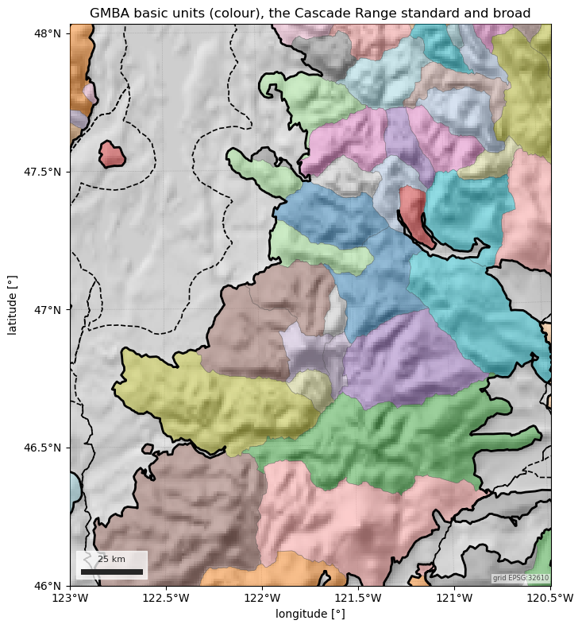
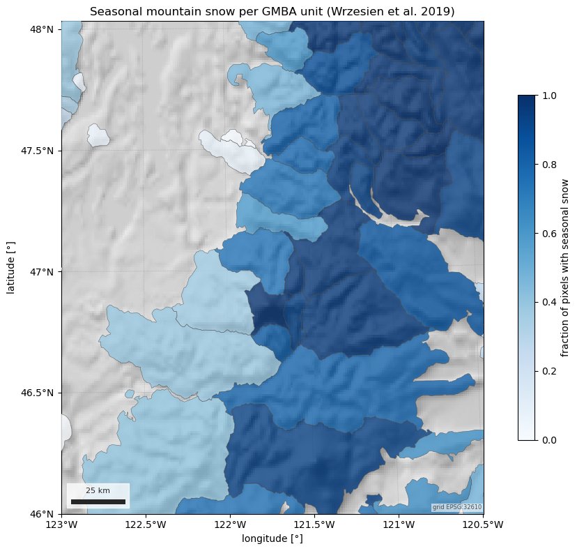

Note
Go to the end to download the full example code.
Mountain ranges: GMBA Mountain Inventory v2#
The Global Mountain Biodiversity Assessment inventory (Snethlage et al. 2022)
names 8,327 mountain ranges and nests them in a hierarchy up to ten levels
deep. esd.boundaries.mountains.load reads it in three subsets:
subset="basic"(default) — the smallest non-overlapping units;subset="300"— 291 non-overlapping major systems;subset="all"— every range at every level, overlapping;level=picks one;
and two extents: "standard" follows the GMBA mountain definition,
"broad" reaches into the surrounding terrain. Each is one zipped shapefile
on EarthEnv, fetched once into the cache; no account is needed.
The figures show the basic units and the Cascade Range over the Natural Earth hillshade, the hierarchy above Mount Rainier, and, per range, how much of it the Wrzesien mask classifies as seasonal mountain snow.
import geopandas as gpd
import matplotlib.pyplot as plt
import numpy as np
import pandas as pd
import easysnowdata as esd
aoi = (-123.0, 46.0, -120.5, 48.0) # the central Cascades, Puget Sound to Yakima
rainier = (-121.94, 46.72, -121.54, 46.99)
box = esd.parse_aoi(aoi)
grid = box.to_geobox(crs="utm", resolution=1000)
print(box)
for src in esd.catalog.get("gmba-mountains").sources:
print(f"{src.id:10} {src.title:10} {', '.join(src.requires) or 'no account'}")
AOI(bounds=(-123.0000, 46.0000, -120.5000, 48.0000), clip=True)
earthenv EarthEnv no account
The basic units intersecting the AOI, the one major system they belong to,
and the standard against the broad extent of that system. Every frame starts
with name, gmba_id, level and path.
basic_gdf = esd.boundaries.mountains.load(aoi)
major_gdf = esd.boundaries.mountains.load(aoi, subset="300")
broad_gdf = esd.boundaries.mountains.load(aoi, subset="300", extent="broad")
print(f"{len(basic_gdf)} basic units; major systems: {', '.join(major_gdf['name'])}")
print(basic_gdf[["name", "level"]].sort_values("name").to_string(index=False))
hillshade_da = esd.terrain.hillshade.load(box.buffer(40_000), style="shaded-relief")
ax = esd.plotting.map(
hillshade_da.odc.reproject(grid, resampling="bilinear"),
cmap="gray",
vmin=0,
vmax=255,
colorbar=False,
title="GMBA basic units (colour), the Cascade Range standard and broad",
figsize=(10, 8),
)
esd.plotting.add_outline(
ax,
basic_gdf,
column="name",
cmap="tab20",
alpha=0.45,
edgecolor="0.3",
linewidth=0.4,
)
esd.plotting.add_outline(ax, major_gdf, edgecolor="black", linewidth=2.0)
esd.plotting.add_outline(
ax, broad_gdf, edgecolor="black", linewidth=1.2, linestyle="--"
)
ax.figure.tight_layout()

0%| | 0.00/39.3M [00:00<?, ?B/s]
2%|▋ | 656k/39.3M [00:00<00:06, 6.30MB/s]
3%|█▎ | 1.34M/39.3M [00:00<00:05, 6.63MB/s]
15%|█████▍ | 5.81M/39.3M [00:00<00:01, 23.8MB/s]
38%|██████████████ | 14.9M/39.3M [00:00<00:00, 50.3MB/s]
62%|██████████████████████▉ | 24.4M/39.3M [00:00<00:00, 66.4MB/s]
87%|████████████████████████████████ | 34.1M/39.3M [00:00<00:00, 76.5MB/s]
0%| | 0.00/39.3M [00:00<?, ?B/s]
100%|██████████████████████████████████████| 39.3M/39.3M [00:00<00:00, 167GB/s]
0%| | 0.00/32.1M [00:00<?, ?B/s]
6%|██▏ | 1.88M/32.1M [00:00<00:01, 18.8MB/s]
12%|████▎ | 3.77M/32.1M [00:00<00:01, 17.3MB/s]
33%|████████████▏ | 10.6M/32.1M [00:00<00:00, 36.5MB/s]
52%|███████████████████▎ | 16.8M/32.1M [00:00<00:00, 38.6MB/s]
64%|███████████████████████▋ | 20.6M/32.1M [00:00<00:00, 25.8MB/s]
78%|████████████████████████████▋ | 24.9M/32.1M [00:00<00:00, 29.8MB/s]
95%|███████████████████████████████████▎ | 30.7M/32.1M [00:01<00:00, 25.5MB/s]
0%| | 0.00/32.1M [00:00<?, ?B/s]
100%|██████████████████████████████████████| 32.1M/32.1M [00:00<00:00, 182GB/s]
0%| | 0.00/22.4M [00:00<?, ?B/s]
5%|█▋ | 1.01M/22.4M [00:00<00:02, 9.88MB/s]
31%|███████████▍ | 6.94M/22.4M [00:00<00:00, 38.6MB/s]
74%|███████████████████████████▎ | 16.5M/22.4M [00:00<00:00, 64.6MB/s]
0%| | 0.00/22.4M [00:00<?, ?B/s]
100%|██████████████████████████████████████| 22.4M/22.4M [00:00<00:00, 103GB/s]
52 basic units; major systems: Cascade Range, Olympic Mountains, Columbia Plateau, Oregon Coast Range
name level
Capitol Hills 6
Cedar River-South Snoqualmie Pass 7
Central South Cascade Crest 7
Chikamin-Keechelus 7
Chiwaukum Mountains 7
Chiwawa Ridge 7
Columbia Gorge North 6
Constance-Buckhorn Group 6
Dakobed Range 7
Duckabush-Hamma Hamma Group 6
East Yakima Ridges 7
Goat Rocks 6
Horse Heaven Hills 7
Huckleberry-Grass 7
Index-Tolt Area 7
Issaquah Alps 7
Kachess Ridge 7
Kitsap Peninsula 6
Mission-Naneum Ridges 7
Monte Cristo Area 7
Mount Adams Area 6
Mount Aix Area 7
Mount Daniel Area 7
Mount Jupiter Area 6
Mount Rainier East Foothills 7
Mount Rainier Massif 7
Mount Rainier North Foothills 7
Mount Rainier West Foothills 7
Mount Saint Helens Area 6
Nason Ridge 7
North Chelan Mountains 7
North Entiat Mountains 7
North Wenatchee Mountains 7
North-Middle Forks Snoqualmie 7
Northeast Olympic Foothills 6
Pilchuck Area 7
Ragged Ridge 7
Seattle-Everett Area 7
Simcoe Mountains 7
Snoqualmie Pass North 7
Sourdough Mountains 7
South Chelan Mountains 7
South Entiat Mountains 7
Southwest Mount Rainier Area 7
Stuart Range 7
Tatoosh Range 7
Teanaway Area 7
Wenatchee Ridge 7
West Manastash-Umtanum Ridges 7
White Mountains 7
Wild Sky 7
Willapa Hills 6
The hierarchy above Rainier: subset="all" holds every level, so the
ranges containing the mountain run from the continent down to the massif.
level= keeps one of them; level 4 is the Cascade Range.
nested_gdf = esd.boundaries.mountains.load(rainier, subset="all")
ladder_gdf = nested_gdf[nested_gdf.contains(esd.parse_aoi(rainier).geometry.centroid)]
print(ladder_gdf.sort_values("level")[["level", "name"]].to_string(index=False))
print(esd.boundaries.mountains.load(rainier, subset="all", level=4)["name"].tolist())
0%| | 0.00/186M [00:00<?, ?B/s]
1%|▏ | 1.02M/186M [00:00<00:18, 10.1MB/s]
3%|█▎ | 6.23M/186M [00:00<00:05, 33.8MB/s]
5%|█▉ | 9.58M/186M [00:00<00:06, 25.3MB/s]
11%|████ | 20.1M/186M [00:00<00:03, 51.1MB/s]
17%|██████▎ | 30.8M/186M [00:00<00:02, 69.1MB/s]
22%|████████▍ | 41.5M/186M [00:00<00:01, 80.8MB/s]
28%|██████████▋ | 52.4M/186M [00:00<00:01, 89.3MB/s]
34%|████████████▉ | 63.1M/186M [00:00<00:01, 94.7MB/s]
40%|███████████████ | 73.8M/186M [00:00<00:01, 98.5MB/s]
46%|█████████████████▋ | 84.5M/186M [00:01<00:00, 101MB/s]
51%|███████████████████▉ | 95.3M/186M [00:01<00:00, 103MB/s]
57%|██████████████████████▊ | 106M/186M [00:01<00:00, 105MB/s]
63%|█████████████████████████▏ | 117M/186M [00:01<00:00, 106MB/s]
69%|███████████████████████████▍ | 128M/186M [00:01<00:00, 106MB/s]
74%|█████████████████████████████▋ | 138M/186M [00:01<00:00, 106MB/s]
80%|████████████████████████████████ | 149M/186M [00:01<00:00, 106MB/s]
86%|██████████████████████████████████▎ | 159M/186M [00:01<00:00, 106MB/s]
92%|████████████████████████████████████▋ | 170M/186M [00:01<00:00, 107MB/s]
97%|██████████████████████████████████████▉ | 181M/186M [00:01<00:00, 107MB/s]
0%| | 0.00/186M [00:00<?, ?B/s]
100%|████████████████████████████████████████| 186M/186M [00:00<00:00, 930GB/s]
level name
1 North America
2 American Cordillera (North America)
3 Pacific Coast Ranges
4 Cascade Range
5 South Washington Cascades
6 Mount Rainier Area
7 Mount Rainier Massif
['Cascade Range']
Where the snow is: the fraction of each basic unit that the Wrzesien mask classifies as seasonal mountain snow (MODIS 2000-2016). The ranges along the crest are mostly seasonal; the foothills to the west and east are not.
mask_da = esd.snow.mountain_snow_mask.load(box.buffer(5000), chunks=None)
lon, lat = np.meshgrid(mask_da["longitude"].values, mask_da["latitude"].values)
pixels_df = pd.DataFrame(
{"lon": lon.ravel(), "lat": lat.ravel(), "class": mask_da.values.ravel()}
)
pixels_gdf = gpd.GeoDataFrame(
pixels_df,
geometry=gpd.points_from_xy(pixels_df["lon"], pixels_df["lat"]),
crs="EPSG:4326",
)
joined_gdf = pixels_gdf.sjoin(basic_gdf[["name", "geometry"]], predicate="within")
seasonal_df = (
joined_gdf.groupby("name")["class"]
.apply(lambda classes: float((classes == 3).mean()))
.rename("seasonal_fraction")
.reset_index()
)
ranges_gdf = basic_gdf.merge(seasonal_df, on="name")
print(
ranges_gdf.sort_values("seasonal_fraction", ascending=False)[
["name", "seasonal_fraction"]
].to_string(index=False)
)
fig, ax = plt.subplots(figsize=(10, 8))
esd.plotting.map(
hillshade_da.odc.reproject(grid, resampling="bilinear"),
ax=ax,
cmap="gray",
vmin=0,
vmax=255,
colorbar=False,
title="Seasonal mountain snow per GMBA unit (Wrzesien et al. 2019)",
)
esd.plotting.add_outline(
ax,
ranges_gdf,
column="seasonal_fraction",
cmap="Blues",
vmin=0,
vmax=1,
alpha=0.8,
edgecolor="0.3",
linewidth=0.4,
legend=True,
legend_kwds={"label": "fraction of pixels with seasonal snow", "shrink": 0.7},
)
fig.tight_layout()

name seasonal_fraction
Stuart Range 0.994382
North Chelan Mountains 0.990610
Dakobed Range 0.989899
Chiwaukum Mountains 0.984866
Mount Rainier Massif 0.983193
Wenatchee Ridge 0.982456
Teanaway Area 0.982165
South Chelan Mountains 0.981481
North Entiat Mountains 0.979920
White Mountains 0.978261
Nason Ridge 0.978227
South Entiat Mountains 0.977227
Monte Cristo Area 0.972973
North Wenatchee Mountains 0.972789
Mount Daniel Area 0.972222
Central South Cascade Crest 0.970403
Sourdough Mountains 0.967890
Mount Aix Area 0.962569
Chiwawa Ridge 0.962175
Chikamin-Keechelus 0.956140
Mount Adams Area 0.939299
Mount Rainier East Foothills 0.938776
Kachess Ridge 0.938596
Mission-Naneum Ridges 0.935109
Wild Sky 0.893540
West Manastash-Umtanum Ridges 0.861527
Tatoosh Range 0.843077
North-Middle Forks Snoqualmie 0.817844
Goat Rocks 0.802289
Snoqualmie Pass North 0.792757
Columbia Gorge North 0.754087
Mount Rainier North Foothills 0.739738
Cedar River-South Snoqualmie Pass 0.730972
Simcoe Mountains 0.640266
Huckleberry-Grass 0.589147
Ragged Ridge 0.588339
Horse Heaven Hills 0.482185
Pilchuck Area 0.469914
Index-Tolt Area 0.462439
Mount Saint Helens Area 0.405912
Southwest Mount Rainier Area 0.387423
Constance-Buckhorn Group 0.375581
Mount Rainier West Foothills 0.368514
Mount Jupiter Area 0.321168
East Yakima Ridges 0.280423
Duckabush-Hamma Hamma Group 0.236264
Issaquah Alps 0.071429
Kitsap Peninsula 0.059701
Northeast Olympic Foothills 0.055556
Capitol Hills 0.010204
Willapa Hills 0.007843
Seattle-Everett Area 0.000000
Total running time of the script: (0 minutes 30.791 seconds)